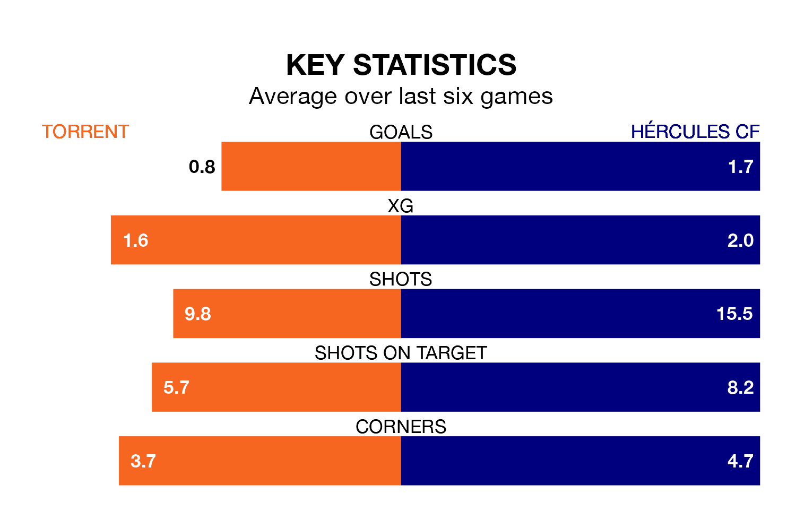

Hércules CF travel for Sunday's early match against Torrent looking to bounce back from defeat last time out in Segunda División RFEF Group 3.
Hércules, who sit third in the league after 19 games, fell to a 1-0 home defeat to SD Formentera on January 21.
They face a Torrent side who also lost their last match, a 1-0 defeat to CE Europa, and who sit eighth in the table.
With 29 goals in 19 games so far this season, Hércules are the league's third-highest scorers with 1.5 goals per game. And they are conceding fewer than average, letting in 19 goals at a rate of 1.0 per game.
Torrent, meanwhile, are below average scorers, with 1.0 goal per game, compared to a league average of 1.2. They have conceded 1.1 goals per game.
The hosts are in mixed form in Segunda División RFEF Group 3, with two wins and two draws from their last six games.
With three wins and a draw over that period, the away team's form is slightly better – they have taken 10 points from 18, compared to Torrent's eight.
Updated: 08:51 (UTC), 25/01/24